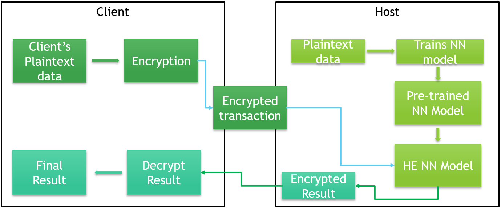

加密狀態下的詐欺偵測推論是否可行？
信用卡詐欺偵測通常仰賴模型對交易特徵進行判斷。本研究希望驗證，在輸入資料不解密的條件下，模型是否仍能完成有效推論，並保留一定程度的分類能力。
Research Focus
以隱私保護金融 AI 為核心，探索同態加密在信用卡詐欺偵測中的應用可能
我目前聚焦於隱私保護金融人工智慧議題，研究如何透過同態加密 Homomorphic Encryption，在不直接揭露交易明文資料的情況下，完成信用卡詐欺偵測模型推論，並進一步探討資料隱私、模型效果與推論效率之間的平衡。
Topic
Privacy-Preserving Credit Card Fraud Detection Using Homomorphic Encryption
以金融詐欺偵測為應用情境，探討在資料維持加密狀態下，機器學習模型進行推論的可行性、效能影響與實務應用價值。
本研究方向以信用卡詐欺偵測為應用場景，結合機器學習與同態加密技術，關注金融資料在分析與運算過程中的隱私保護問題。
傳統機器學習模型通常需要接觸明文資料才能完成訓練或推論，但金融交易資訊涉及高度敏感的個人消費與風險資料。若能在資料保持加密的情況下完成模型運算，將有助於建立更安全的金融 AI 應用流程，並為未來跨機構合作、雲端推論與隱私保護資料分析提供可行方向。
Motivation
隨著數位支付、網路交易與信用卡使用日益普及，信用卡詐欺偵測已成為金融科技與風險管理中的重要議題。金融機構需要即時辨識可疑交易，以降低詐欺損失並保護使用者權益，而機器學習模型也因此被廣泛應用於異常交易辨識。
然而，金融交易資料本身具有高度敏感性，可能包含個人消費模式、交易金額、時間序列行為與風險特徵。當這些資料需要交由外部服務、雲端平台或第三方運算環境處理時，便會面臨資料外洩、未授權存取與隱私暴露等風險。
是否能在不直接揭露交易明文內容的前提下，仍完成信用卡詐欺偵測模型的有效推論？
同態加密提供了一種值得研究的可能。透過此技術，資料可在加密狀態下進行特定數學運算，理論上讓模型能直接處理密文資訊，並將加密後的推論結果回傳給資料持有者。這使我開始關注隱私保護、金融風控與 AI 模型推論三者之間的整合應用。
Questions
本研究方向並非只關注模型準確率，而是希望從可行性、效能與應用價值三個層面，理解同態加密導入金融詐欺偵測後所帶來的影響。
信用卡詐欺偵測通常仰賴模型對交易特徵進行判斷。本研究希望驗證，在輸入資料不解密的條件下，模型是否仍能完成有效推論，並保留一定程度的分類能力。
加密運算相較一般明文運算更複雜，可能造成推論時間增加、計算資源需求提升、數值近似誤差累積，以及模型結構受到限制。因此，本研究希望比較明文推論與加密推論在結果、延遲與實作複雜度上的差異。
信用卡詐欺資料通常存在嚴重的類別不平衡問題，若只觀察 Accuracy，可能無法真實反映模型對詐欺交易的辨識能力。因此，本研究將更重視 Recall、Precision、F1-score、ROC-AUC、PR-AUC，並觀察在導入加密推論後，模型對少數類別詐欺樣本的辨識能力是否受到影響。
Concept
本研究關注的核心情境，是讓資料持有者不需交出交易明文內容，仍可使用遠端模型服務完成詐欺風險判斷。

使用者或資料持有端保有原始交易資料，不直接將明文送出。
交易資料經過同態加密處理後，轉換為密文形式。
遠端模型服務僅接收密文，並在無法直接讀取原始資料的情況下完成運算。
模型輸出同樣維持加密狀態，再傳回 Client 端。
最終由資料持有者解密結果，取得交易是否具備詐欺風險的推論資訊。
Method
本研究規劃將以信用卡詐欺偵測資料集為基礎，先建立可比較的明文模型，再進一步導入同態加密推論流程，觀察其對模型預測能力、運算效率與實務應用可行性的影響。
本研究預計以信用卡交易資料作為主要實驗對象，處理詐欺交易比例極低的高度不平衡二元分類問題。在資料分析與模型評估上，將避免只以整體 Accuracy 判斷模型成效，而是更重視模型對少數詐欺交易的實際辨識能力。
研究將觀察在導入同態加密推論後，模型對詐欺樣本的偵測能力是否維持穩定，並分析隱私保護機制可能帶來的效能代價。
研究初期將先建立明文環境下的信用卡詐欺偵測基準模型，作為後續密文推論比較的依據。模型設計將優先考量是否適合轉換至同態加密運算、是否具備合理的分類能力、是否便於比較明文與密文推論結果，以及是否能在不平衡資料下維持一定偵測效果。
同態加密所提供的隱私保護價值，是否能在可接受的準確率與運算成本範圍內實際應用。
本研究預計以 CKKS 作為主要同態加密方案。CKKS 適合處理近似實數運算，因此較符合機器學習模型推論中常見的連續數值特徵與線性代數運算需求。
TenSEAL 為支援同態加密張量運算的 Python 函式庫，常被用於隱私保護機器學習情境，可協助處理加密向量、加密矩陣與模型推論流程。研究中將優先評估其在CKKS 加密推論與機器學習整合上的實作便利性。
Pyfhel 是用於 Python 環境下操作同態加密的實作工具，提供多種密文運算介面，可協助理解同態加密中的加法、乘法與向量計算流程。研究中可作為觀察底層加密運算行為、比較工具設計差異的重要對照。
明文推論與密文推論的分類結果差異。Recall、Precision、F1-score 等指標變化。加密誤差是否影響詐欺交易判斷。
加密時間、密文推論時間、解密時間，以及相較明文推論的延遲增加幅度。
CKKS 參數設定對誤差與效能的影響、計算深度與可支援模型複雜度，以及密文運算過程中的數值穩定性。
TenSEAL 與 Pyfhel 在程式設計方式上的差異、對機器學習推論流程的支援程度，以及實作彈性、學習成本與可維護性。
同態加密技術在信用卡詐欺偵測任務中，究竟適合作為概念驗證、實驗研究，或具有進一步實務導入潛力。
Progress
目前我已完成研究主題初步聚焦，並開始透過文獻閱讀與開源專案重現，建立對同態加密詐欺偵測應用的基本理解。
已將研究焦點定為：基於同態加密之隱私保護信用卡詐欺偵測研究，並明確將主題聚焦於金融詐欺偵測、資料隱私保護、加密狀態下的機器學習推論，以及效能與可行性比較。
已開始整理同態加密在機器學習推論中的應用、信用卡詐欺偵測常見建模方法、隱私保護 AI 在金融場景中的方向，以及加密推論與明文推論效能比較。
目前已實際接觸 Client、Host、Secure Middle Server 之間的資料交換與角色分工，初步理解加密資料傳遞與加密推論流程。
接下來將進一步選定資料集與前處理策略、建立明文模型基準、選擇適合導入加密推論的模型、設計明文與密文結果比較，並確認評估指標與效能衡量方式。
Value
本研究方向希望從金融風險管理與隱私保護人工智慧的交會點出發，探討資料安全需求日益提高的情境下，AI 模型是否仍能維持實用價值。
金融交易資料具備高度隱私與風險屬性。若能在不揭露原始明文的條件下完成風險判斷，將有助於降低資料暴露可能，也能呼應未來金融資料治理與安全運算需求。
透過明文與密文推論的比較，本研究可更具體觀察模型準確度是否下降、推論速度是否可接受、加密參數是否影響應用性，以及哪些模型較適合導入隱私保護流程。
本研究並非單純探討密碼學理論，而是以信用卡詐欺偵測這類具體金融科技問題為落地場景，展現金融資料理解、AI 建模能力、安全運算概念與系統實作視角。
Future
此研究方向預計作為我後續碩士論文發展的重要基礎，並持續往隱私保護金融 AI與安全資料分析應用深化。
將金融資料問題、機器學習方法、雲端與系統思維，以及資料隱私保護意識結合，逐步發展成具備實務價值的金融科技能力。
未來我也希望持續朝金融業 IT、金融科技系統開發、資料分析與 AI 應用、隱私保護資料處理等方向累積專業能力，讓研究成果不只停留於論文，也能連結到真實世界的應用需求。